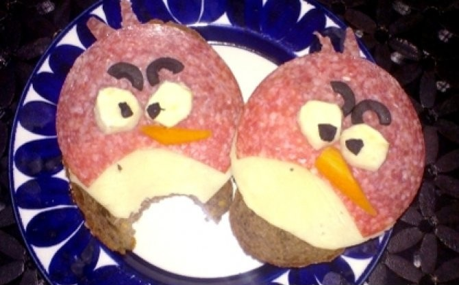

A zsemléket kettévágjuk és a tetejüket vajjal megkenjük. A szalámikból darabokat vágunk úgy, hogy egy "duzzadó hold" alakot kapjunk, és a kör alakú sajtokat alátesszük. Ha esetleg kilógna a sajt a szalámi alól, akkor hozzávágjuk. A répát meghámozzuk, felkarikázzuk és "csőr" alakúra vágjuk, majd egyet-egyet a szalámira helyezzük. A fehérrépát is felkarikázzuk, és két-két darabot helyezünk mindegyik szendvicsre. Az olivabogyókat szintén karikákra, majd a karikákat félbevágjuk, és a fehérrépa szemek fölé rakjuk. A kimaradt olivabogyókból nagyon apró pupillákat készítünk, és a fehérrépákra tesszük. A kimaradt szalámikból pedig két apró tarajat készítünk.
Már kész is az Angry birds szendvics, gyerekeknek és felnőtteknek egyaránt!
| Energia | 348 kcal / adag |
| Elkészítés | 30-60 perc |
| Diéta | cukormentes |
| Adag | 10 főre |